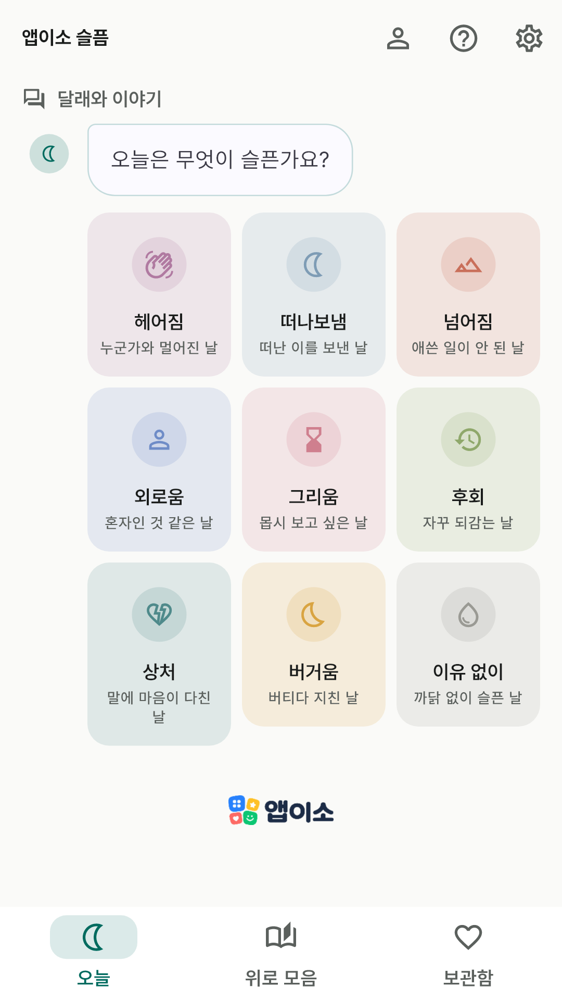
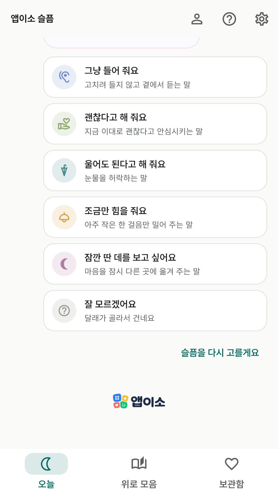
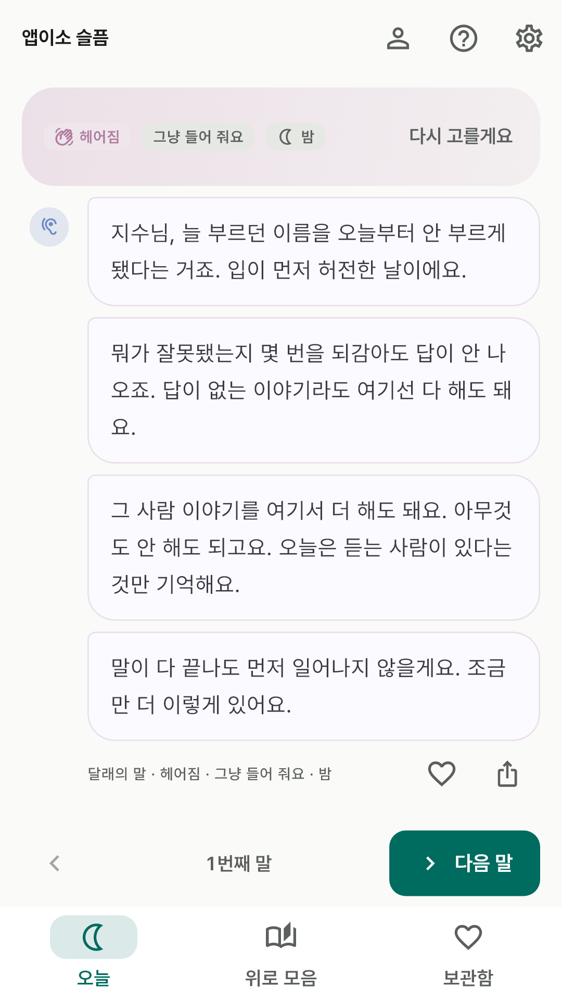
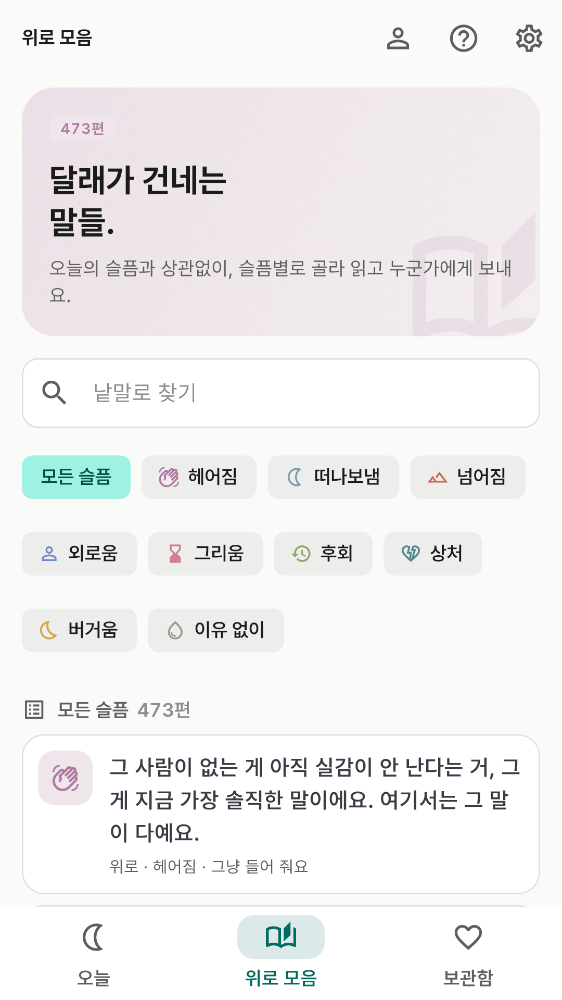
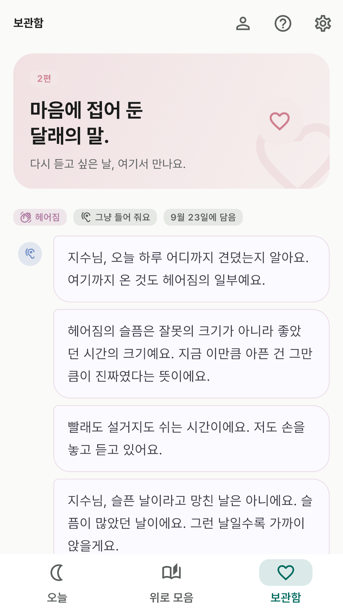

구글 플레이 공개 준비 중
비공개 테스트를 거쳐 공개할 예정이에요.
오늘은 무엇이 슬픈지, 지금은 어떤 말이 듣고 싶은지 고르면 달래가 곁에서 말을 건네요.
고치려 들지 않고, 먼저 알아줘요. 한 편을 다 읽고 옆으로 넘기면 다음 말이 이어져요.
무엇을 하나요
- 무엇이 슬픈가요 — 헤어짐·떠나보냄·넘어짐·외로움·그리움·후회·상처·버거움·이유 없이. 이유를 대지 않아도 괜찮아요.
- 어떤 말이 듣고 싶어요 — 그냥 들어 줘요·괜찮다고 해 줘요·울어도 된다고 해 줘요·조금만 힘을 줘요·잠깐 딴 데를 보고 싶어요. 잘 모르겠으면 달래가 골라요. 위로는 결이 맞아야 위로라서, 들어 달라는 사람에게는 조언하지 않아요.
- 달래의 네 마디 — 먼저 알아주는 첫마디, 결에 맞춘 위로, 지금 할 수 있는 아주 작은 것 하나(또는 아무것도 안 해도 된다는 허락), 곁을 떠나지 않는 마지막 한마디. 아침·낮·저녁·밤에 따라 다른 말을 들어요.
- 넘겨 읽기 — 옆으로 넘기거나 [다음 말]을 누르면 같은 슬픔·결로 다음 편이 이어져요. 횟수 제한은 없어요.
- 위로 모음 · 보관함 — 위로와 마지막 한마디 전부를 슬픔별로 찾아 읽고, 마음에 남는 편은 하트로 담아 두고, 슬픈 사람이 곁에 있는 날엔 한 줄 골라 보내요.

오늘은 무엇이 슬픈가요?

어떤 말이 듣고 싶어요?

달래의 네 마디

위로 모음

보관함
앱이소답게. 광고도 인앱 결제도 없어요. 가입 없이, 인터넷 없이 써요.
고른 슬픔을 날짜별로 기록하거나 세지 않아요.
이 앱이 하지 않는 것
- 달래는 사람을 대신하지 못해요. 너무 무거운 날에는 곁에 있는 사람에게도 꼭 말해 주세요.
- 슬픔의 이유를 캐묻거나, 고치라고 하거나, 괜찮아질 거라고 약속하지 않아요.
- 위치·날씨를 조회하지 않고, 알림도 보내지 않아요. 생각날 때 직접 열어요.
개인정보
별명·나이대·성별·일상은 모두 선택 사항이고 이 폰에만 저장돼요. 개발자 서버로 보내는 것은 없어요.
안드로이드 자동 백업이 켜져 있으면 사용자 본인의 구글 계정 백업에 포함될 수 있어요.
자세한 내용은 개인정보처리방침에 있어요.
문의
appisoLabs@gmail.com · 앱이소가 만든 다른 앱